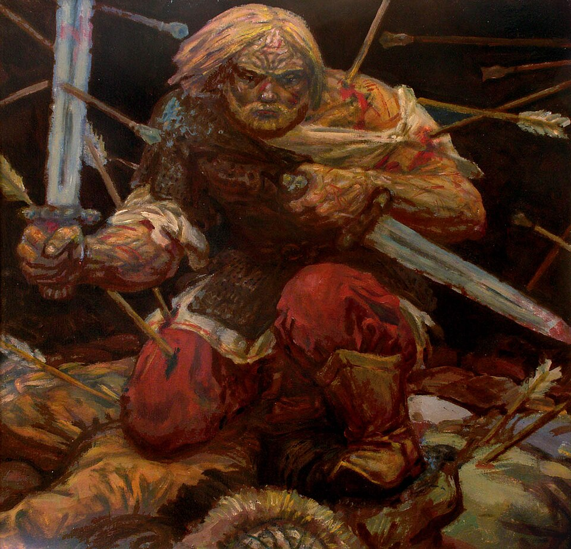
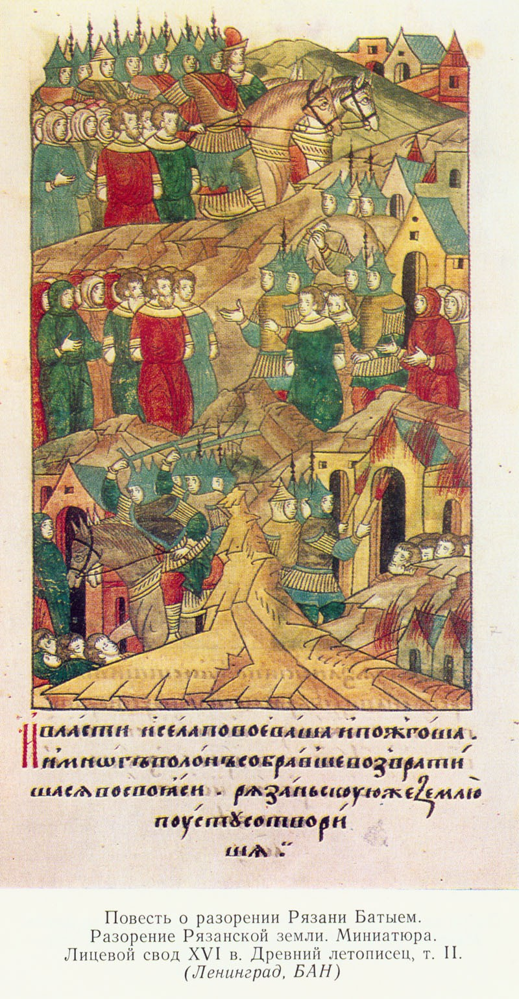
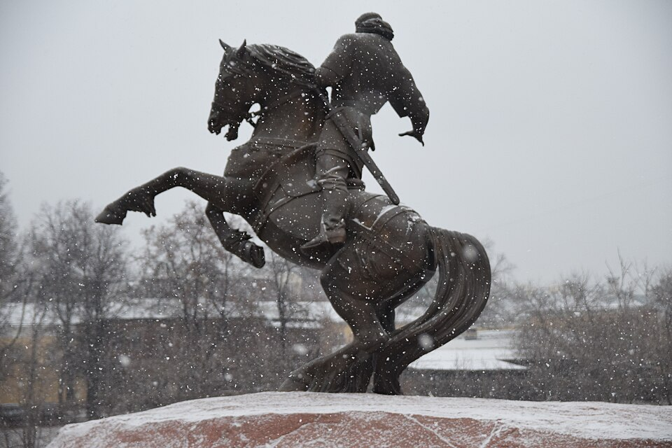

Максим Пресняков, «Евпатий Коловрат», 2009Современная художественная интерпретация, не документ XIII века. Воевода на коне, один, на фоне пламени: образ человека, который пошёл в бой, которого не мог выиграть.
воевода · XIII век · Рязань
Евпатий Коловрат · рязанский воевода
Евпатий Коловрат
Батый сжёг Рязань — но запомнил имя того, кто рубился на пепелище.
◆ Выбор
Воевода выбрал не сдаться: догнать орду, которая сильнее его в сто раз.
◆ Бой
В поединке Коловрат рассёк Хостоврула надвое, до седла — и орда, взявшая десятки городов, запомнила этот бой.
◆ Память
В летописях XIII века его имени нет — но имя жило в народе, пока не встало в бронзе.